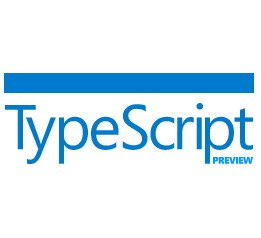

Dart brings structure to web app engineering with a new language, libraries, and tools
To get started:

<!DOCTYPE html>
<html>
<head><title> TypeScript Greeter </title></head>
<body>
<script src='greeter.js'></script>
</body>
</html>
class Greeter {
constructor(public greeting: string) { }
greet() {
return "<h1>" + this.greeting + "</h1>";
}
};
var greeter = new Greeter("Hello, world!");
var str = greeter.greet();
document.body.innerHTML = str;
npm install -g typescript.ts file extensiontsc your_file.ts<script src="path/to/your_file.js"></script>Go to the TypeScript tutorial
| Table of Contents | t |
|---|---|
| Exposé | ESC |
| Full screen slides | e |
| Presenter View | p |
| Source Files | s |
| Slide Numbers | n |
| Toggle screen blanking | b |
| Show/hide slide context | c |
| Notes | 2 |
| Help | h |